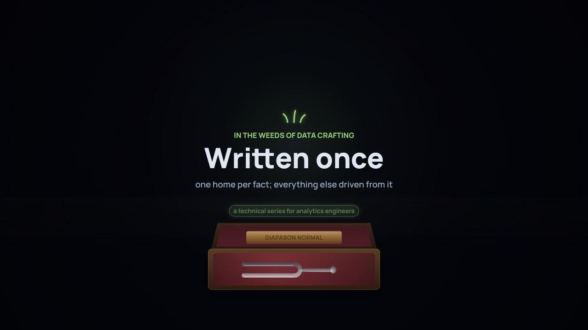

Película 1 de 9 · La serie y su método
Decláralo, luego constrúyelo
dbt llama modelo a cada consulta. El modelo de datos es el plano: declarado junto al código, y comprobado por las pruebas.
Temas › En las entrañas del oficio de datos
Una serie técnica para analytics engineers: cómo un modelo de datos acordado se convierte en tablas, con dbt, en Databricks. Sigue a Jun, analytics engineer de la universidad, desde una pregunta hasta modelos versionados, probados y documentados, con un agente de IA que ayuda en cada paso y una persona que aprueba cada uno.
Las películas están en inglés, con subtítulos en español. Estas páginas, los capítulos, las preguntas, los labs y las situaciones están en español.
Míralas en orden. Es técnica: muestra código, YAML y Markdown reales de un proyecto de dbt de ejemplo que corre en dbt Core con DuckDB, en el repositorio de este sitio, así que puedes ejecutarlo tú mismo. Se entiende mejor después de De las palabras a los datos.
Película 1 de 9 · La serie y su método
dbt llama modelo a cada consulta. El modelo de datos es el plano: declarado junto al código, y comprobado por las pruebas.

Película 2 de 9 · Alcance y responsables
Un modelo no tiene borde hasta que una pregunta se lo da. Modela solo lo que la pregunta toca, y nombra primero al responsable de cada significado.

Película 3 de 9 · Identidad y claves
Una estudiante, tres claves, y alguien que se le parece. Las reglas unen la mayoría; una persona decide el resto, y la decisión se vuelve datos y una prueba.

Película 4 de 9 · Grano y tiempo
Doce el día del censo, nueve hoy: las dos correctas. Di qué es una fila y qué día describe, antes de escribir SQL, y prueba las dos cosas.

Película 5 de 9 · Contratos y pruebas
Cada brecha recibe una decisión. Prométela en un contrato; demuéstrala con una prueba, escrita antes del código que comprueba.

Película 6 de 9 · Capas y CTE
Cuatro capas ponen las pruebas en verde. Cada capa tiene una tarea; cada CTE, un paso; y la regla se escribe una sola vez.

Película 7 de 9 · Dominios y propiedad
El significado de cada hecho tiene dueño. Los dueños publican un núcleo público y versionado; los consumidores construyen sobre él, nunca sobre los marts de otros.

Película 8 de 9 · Agentes y revisión
Un agente de IA redacta en minutos. Sigue reglas escritas en el proyecto, muestra la consulta detrás de cada afirmación, nunca debilita una prueba, y las personas aprueban.

Película 9 de 9 · Documentación y versiones
Cada copia de un dato es una ocasión de desviarse. Un hogar para cada dato, todo lo demás generado, y un cambio que rompe llega como una versión nueva con fecha.
De las palabras a los datos termina con la versión 3 del modelo de credencial aprobada. Esta serie la construye, a partir de una pregunta de planificación: ¿cuántos estudiantes están a 15 créditos o menos de un diploma de posgrado, a la fecha de censo? Necesita credenciales de tres sistemas, un estudiante con tres claves distintas, créditos que cuentan para títulos, e historia.
Los contornos cian son del lado técnico; los dorados, del lado de negocio.
Jun, analytics engineer, guía de la serie
Noor, arquitecta de datos
Mei, registro académico
Planificación, y la billetera del estudiante